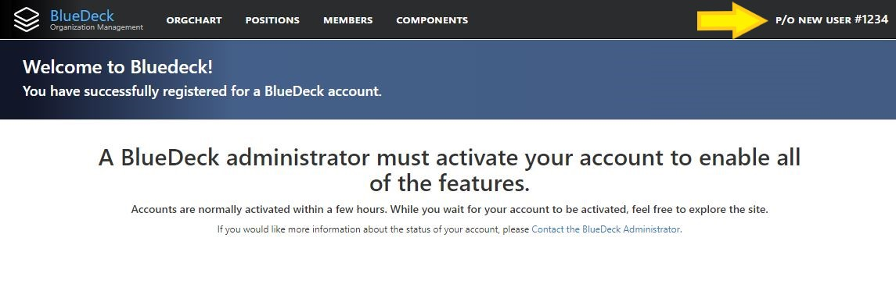

Activating your BlueDeck Account
Many BlueDeck users will have pre-provisioned accounts already in the system. These accounts were created by the BlueDeck Adminstrator based on a Personnel Roster from late 2018. If you are one of the users that has a pre-provisioned account, you will be directed to the "Registration Pending" page. You can verify that you have one of the pre-provisioned accounts by looking for your name in the top right corner of the page:

You may notice that your name is displaying the wrong rank. If you were promoted after late 2018, then BlueDeck will still have you listed under your old rank. Don't worry! You can correct your rank as soon as your account is activated by a BlueDeck Administrator.
If you have a pre-provisioned BlueDeck Account, a message to activate your account is automatically sent to the BlueDeck Administrator the first time you log on to BlueDeck. If you are seeing the "Registration Page," then you don't need to take any additional steps. Your account will be activated by the BlueDeck Adminstrator within the next 24 hours.
You do not need a fully active account to use many of the features of BlueDeck. Feel free to explore the site in the meantime.
If you have any questions about your pre-provisioned account or the status of your registration, please Contact the BlueDeck Adminstrator.